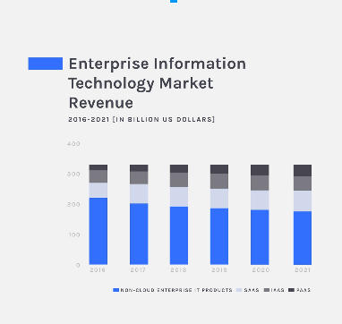
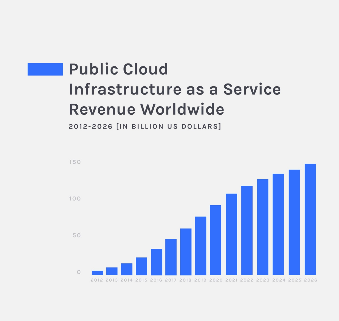

<section>
  </section><h2>Cloud Computing and related technologies</h2>
  <p>
    Alberto Molina Coballes, José Luis Rodríguez Rodríguez and José Domingo Muñoz Rodríguez
  </p>
  <p><small>Cloud Computing in European schools. Project: 2017-1-ES01-KA202-038471</small></p>
  <p>
    
  </p>
  <p>
    <a href="http://creativecommons.org/licenses/by-sa/3.0/">
      </a>
  </p>
  <p><small>Theme by: <a href="http://lab.hakim.se/reveal-js/#/">reveal.js</a></small></p>


<section>
  </section><h2>Disclaimer</h2>
  <quote>
    The European Commission support for the production of this
    publication does not constitute an endorsement of the contents
    which reflects the views only of the authors, and the Commission
    cannot be held responsible for any use which may be made of the
    information contained therein</quote> 


<section>
  </section><h2>Introduction to IaaS</h2>
  <ul>
    <li>General concepts</li>
    <li>Statistics</li>
    <li>IaaS (and other ..aaS) solutions providers</li>
    <li>What may be the next step of our project? </li>
    <li>Why AWS? </li>
    <li>Who/What companies use AWS? </li>
  </ul>


<section>
	<section>
	  </section></section>
	  <h3><big>IaaS. General concepts</big><br></h3>
	  <ul>
	    <li>Infrastructure as a service (IaaS) is a form of Cloud Computing that provides virtualized computing resources over the Internet.</li>
	    <li>IaaS is one of the three main categories of Cloud Computing services, alongside Software as a Service (SaaS) and Platform as a Service (PaaS).
	</li>
	    <li>It is mainly used by system administrators.   </li>
	  </ul>
	


	<section>
	  </section><h3><br></h3><h3><big>IaaS. General concepts</big></h3>
	  
	  <ul>
	    <li> Figure to remember:  </li>
	     
	  </ul>
	


	<section>
	  </section><h3><big><big>IaaS. General concepts</big></big></h3>

	  
	  <ul><li>On IaaS, System Administrators:
		 </li></ul><ul>
	    <ul><li>can <span style="text-decoration: underline;">manage</span> Operating Systems and all the software running on them. It is equivalent to use Virtual Machines but not local but on the cloud. The "virtual machines" are called "instances".<br>  <meta charset="utf-8"><big><big><big><big><span style="font-size: 11pt; font-family: Arial; color: rgb(0, 0, 0); background-color: transparent; font-weight: 400; font-style: normal; font-variant: normal; text-decoration: none; vertical-align: baseline; white-space: pre;" id="docs-internal-guid-f81a1cf8-7fff-0981-c8cf-54eb79d813ea"></span></big></big></big></big>
</li>
    		 <li><span style="text-decoration: underline;">don't have to worry</span> about installing software on the host/hosts where instances run: networking, storage, servers and virtualization; this resources are offered by technologies by the cloud.</li>
	    </ul>
	    
	  </ul><ul><li>What is IaaS for one of the great cloud provider? Click <a href="https://azure.microsoft.com/en-in/overview/what-is-iaas/"> here </a>.<br> </li></ul>
	


<section>
	</section><h3><br></h3><h3><big>IaaS. Statistics <br></big></h3><h4><big><big>(Source 1: comparision and evolution)</big></big>
</h4>
<meta charset="utf-8"><ul><li><span style="font-size: 11pt; font-family: Arial; color: rgb(0, 0, 0); background-color: transparent; font-weight: 400; font-style: normal; font-variant: normal; text-decoration: none; vertical-align: baseline; white-space: pre;">We can analyze the current and predict use of Cloud Computing by the study of different sources.</span></li><li><span style="font-size: 11pt; font-family: Arial; color: rgb(0, 0, 0); background-color: transparent; font-weight: 400; font-style: normal; font-variant: normal; text-decoration: none; vertical-align: baseline; white-space: pre;">Source 1: &nbsp;RedPixie</span></li><ul><li><span style="font-size: 11pt; font-family: Arial; color: rgb(0, 0, 0); background-color: transparent; font-weight: 400; font-style: normal; font-variant: normal; text-decoration: none; vertical-align: baseline; white-space: pre;">https://www.redpixie.com</span></li><li><span style="font-size: 11pt; font-family: Arial; color: rgb(0, 0, 0); background-color: transparent; font-weight: 400; font-style: normal; font-variant: normal; text-decoration: none; vertical-align: baseline; white-space: pre;"></span><p dir="ltr" style="line-height: 1.2; margin-top: 0pt; margin-bottom: 0pt;"><span style="font-size: 11pt; font-family: Arial; color: rgb(0, 0, 0); background-color: transparent; font-weight: 400; font-style: normal; font-variant: normal; text-decoration: none; vertical-align: baseline; white-space: pre;">Founded in 2010, RedPixie is one of Europes largest cloud specialists.</span></p></li><li><p dir="ltr" style="line-height: 1.2; margin-top: 0pt; margin-bottom: 0pt;"><span style="font-size: 11pt; font-family: Arial; color: rgb(0, 0, 0); background-color: transparent; font-weight: 400; font-style: normal; font-variant: normal; text-decoration: none; vertical-align: baseline; white-space: pre;">Their mission is to go beyond technology, building and managing Azure hybrid solutions to create new capabilities and better business outcomes for clients in financial services.</span></p></li></ul></ul><div style="margin-left: 40px;"><br>
</div>
<p dir="ltr" style="line-height: 1.2; margin-top: 0pt; margin-bottom: 0pt;"><span style="font-size: 11pt; font-family: Arial; color: rgb(0, 0, 0); background-color: transparent; font-weight: 400; font-style: normal; font-variant: normal; text-decoration: none; vertical-align: baseline; white-space: pre;"><br></span></p><ul><li><span style="font-size: 11pt; font-family: Arial; color: rgb(0, 0, 0); background-color: transparent; font-weight: 400; font-style: normal; font-variant: normal; text-decoration: none; vertical-align: baseline; white-space: pre;">Thirty years ago, all IT processes were run on rigid, on-premises systems.</span></li><li><span style="font-size: 11pt; font-family: Arial; color: rgb(0, 0, 0); background-color: transparent; font-weight: 400; font-style: normal; font-variant: normal; text-decoration: none; vertical-align: baseline; white-space: pre;">But with the explosion of</span><a href="https://www.redpixie.com/blog/advantages-of-cloud-computing" style="text-decoration: none;"><span style="font-size: 11pt; font-family: Arial; color: rgb(0, 0, 0); background-color: transparent; font-weight: 400; font-style: normal; font-variant: normal; text-decoration: none; vertical-align: baseline; white-space: pre;"> </span><span style="font-size: 11pt; font-family: Arial; color: rgb(17, 85, 204); background-color: transparent; font-weight: 400; font-style: normal; font-variant: normal; text-decoration: underline; vertical-align: baseline; white-space: pre;">cloud computing</span></a><span style="font-size: 11pt; font-family: Arial; color: rgb(0, 0, 0); background-color: transparent; font-weight: 400; font-style: normal; font-variant: normal; text-decoration: none; vertical-align: baseline; white-space: pre;">, enterprises can now access infrastructure and resources on-demand as a service. IaaS, PaaS and SaaS dominate the modern market and each provides a different approach to IT management.</span></li></ul>
	
	<br><h3><big>IaaS. Statistics</big></h3>
<ul><li><span style="font-size: 11pt; font-family: Arial; color: rgb(0, 0, 0); background-color: transparent; font-weight: 400; font-style: normal; font-variant: normal; text-decoration: none; vertical-align: baseline; white-space: pre;">The next figure shows the growth of IaaS use. It is expected that companies use IaaS 3 more times than in 2018.</span></li></ul><br><br>
	    <section></section><h3><big><big>IaaS. Statistics <br></big></big></h3><h4><big><big>(Source 2: comparision and evolution)</big></big>
</h4><meta charset="utf-8"><ul><li><a href="https://www.sysgroup.com/" style="text-decoration: none;"><span style="font-size: 11pt; font-family: Arial; color: rgb(17, 85, 204); background-color: transparent; font-weight: 400; font-style: normal; font-variant: normal; text-decoration: underline; vertical-align: baseline; white-space: pre;">https://www.sysgroup.com</span></a></li><li><span style="font-size: 11pt; font-family: Arial; color: rgb(0, 0, 0); background-color: transparent; font-weight: 400; font-style: normal; font-variant: normal; text-decoration: none; vertical-align: baseline; white-space: pre;">SysGroup is one of the UK's fastest growing managed IT and cloud hosting provider, with an innovative, agnostic approach to technology. We create customised solutions for customers to match your needs, priding ourselves on an intuitive understanding and consultative, client-focused approach.</span><span style="font-size: 11pt; font-family: Arial; color: rgb(0, 0, 0); background-color: transparent; font-weight: 400; font-style: normal; font-variant: normal; text-decoration: none; vertical-align: baseline; white-space: pre;"></span></li><li><span style="font-size: 11pt; font-family: Arial; color: rgb(0, 0, 0); background-color: transparent; font-weight: 400; font-style: normal; font-variant: normal; text-decoration: none; vertical-align: baseline; white-space: pre;">Article:</span><span style="font-size: 11pt; font-family: Arial; color: rgb(0, 0, 0); background-color: transparent; font-weight: 400; font-style: normal; font-variant: normal; text-decoration: none; vertical-align: baseline; white-space: pre;"></span></li><ul><li><span style="font-size: 11pt; font-family: Arial; color: rgb(0, 0, 0); background-color: transparent; font-weight: 400; font-style: normal; font-variant: normal; text-decoration: none; vertical-align: baseline; white-space: pre;">10 Cloud Computing Statistics You Need To Know</span></li><li><span style="font-size: 11pt; font-family: Arial; color: rgb(0, 0, 0); background-color: transparent; font-weight: 400; font-style: normal; font-variant: normal; text-decoration: none; vertical-align: baseline; white-space: pre;"></span><span style="font-size: 11pt; font-family: Arial; color: rgb(0, 0, 0); background-color: transparent; font-weight: 400; font-style: normal; font-variant: normal; text-decoration: none; vertical-align: baseline; white-space: pre;">URL: SysGroup is one of the UK's fastest growing managed IT and cloud hosting provider, with an innovative, agnostic approach to technology. We create customised solutions for customers to match your needs, priding ourselves on an intuitive understanding and consultative, client-focused approach.</span></li></ul><li><br></li></ul>